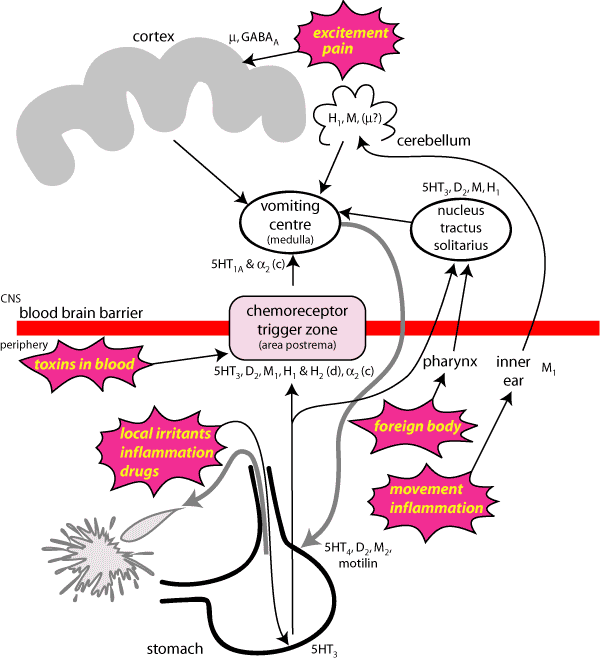

The physiology of vomiting from a pharmacologist's point of view. There are species differences in the receptors involved; (d) dog only, (c) cat only. 5HT1A, 5HT3, 5HT4 - 5 hydroxy tryptamine receptors; α2 - adrenergic receptors; D2 - dopamine receptors; GABAA - g aminobutyric acid receptors; H1, H2 - histamine receptors; M1, M2 - muscarinic acetylcholine receptors, µ - opioid receptors.
The main treatment for vomiting is intravenous fluids (see diarrhoea treatment).
The physiology of vomiting is complicated with a large number of pathways and
neurotransmitters involved (see diagram). A wide variety of stimuli can provoke
vomiting by neural or humoral mechanisms which are coordinated by the vomiting
centre in the medulla. Antiemetics vary in their site or sites of action and
this influences their effectiveness in different clinical situations. Most of
the older dugs have been used empirically for a long time and have actions at
several possible sites. Blocking several sites may provide a synergistic antiemetic
effect, but there are species differences and our knowledge of what happens
in dogs and cats is limited.
Antiemetics are indicated for the control of intractable vomiting causing distress
to the animal or its owner. They are not necessary when the vomiting is intermittent
and fluid and electrolyte balance can easily be corrected. Antiemetics are symptomatic
treatments, and the underlying cause of the vomiting should be treated.
Some of the most generally effective antiemetics are phenothiazines such as prochlorperazine which act as dopamine D2 antagonists in the vomiting centre and the chemoreceptor trigger zone, although they also have weak anticholinergic activity and a variety of other effects. Because of their inhibition of all the CNS centres involved in vomiting the phenothiazines are effective antiemetics for most causes of vomiting. Their antiemetic effects occur at drug concentrations much lower than necessary to produce sedation, but sedation is often seen in practice, probably because of changes in the volume of distribution in dehydrated animals. They must be used with caution in dehydrated patients because they are a1 adrenergic receptor blockers, and can cause or aggravate hypotension. In general, the antiemetic properties (and side effects) of phenothiazines are dose related. If control of vomiting is not achieved at low doses, the dose can be judiciously increased until a beneficial effect is observed or significant side effects (usually hypotension) are seen. Acepromazine is much less effective than prochlorperazine.
Antihistamines, such as diphenhydramine, cyclizine and meclozine primarily inhibit vomiting by blocking H1 receptors in the vestibular apparatus and, to a lesser extent, the chemoreceptor trigger zone. They can be very effective in people, but less so in animals. They are mainly used in the treatment of vomiting from motion sickness in dogs. Cats are more resistant to their effects.
Metoclopramide (when used as an antiemetic) and droperidol
primarily act as D2 antagonists at the chemoreceptor trigger zone and inhibit
vomiting due to blood borne emetic agents such as bacterial or uraemic toxins.
Metaclopramide also promotes gastric emptying (see below), probably by acting
as a 5HT4 agonist, which adds to its antiemetic effect. In slightly
higher doses it is also a 5HT3 antagonist, which also potentiates
the antiemetic effects. Droperidol is a very potent D2 antagonist at much lower
doses than required to produce sedation , but can produce a variety of side
effects. Vomiting due to delayed gastric emptying may respond to these or to
prokinetic drugs such as cisapride (a 5HT4 agonist). They may have
some sedative effect. Domperidone (D2 antagonist) is used in
people, but rarely in animals. It does not cross the blood brain barrier (although
it has an effect on the CTZ) so the CNS side effects of the other D2 antagonists
are not seen. Anticholinergic drugs
These are rarely effective as antiemetics unless vomiting is initiated by contraction
or spasm of smooth muscle in the gastrointestinal tract, when they will occasionally
be able to relieve the spasm and reduce the stimulus to vomit. Anticholinergic
drugs do not prevent the vomiting caused by stimulation of peripheral receptors
or by inflammation. Since these drugs reduce gastrointestinal motility, they
may actually be contraindicated in vomiting because they may exacerbate the
hypomotility of the gastric body. Hyoscine is occasionally helpful in motion
sickness in dogs and cats.
Ondansetron and tropisetron are used in people, particularly for vomiting associated with cancer chemotherapy. Destruction of gut epithelium by the anticancer drugs causes the release of 5HT from chromaffin cells in the afferent pathways; 5HT3 receptor antagonists block these pathways. These drugs have not been used much in animals because of expense, although they have been shown to be effective in dogs and cats.
If vomiting is caused by excitement, sedatives such as diazepam
can be effective, although acepromazine may be better as it
is a D2 antagonist as well. Cannabinoids have an antiemetic effect: in the UK,
nabilone, a D9 tetrahydrocannabinol analogue, is sometimes
used in people. It is very expensive. α2 antagonists (yohimbine,
atipamezole) may be useful in the cat although they are not
often used as antiemetics. Buspirone, an anxiolytic, may also
be useful in cats as a 5HT1A agonist in the vomiting centre.
Corticosteroids are sometimes used in people, particularly
in combinations to treat cancer chemotherapy induced emesis. Thier mechanism
of action is unknown, and in view of their side effects, they are probably best
avoided in animals.
It is occasionally necessary to make an animal vomit, usually as part of decontamination
in suspected poisoning cases. Emetics should not be used unless the animal is
fully conscious and there is no risk of it inhaling vomit.
Apomorphine, a dopamine agonist with a similar structure to
morphine, is the most reliable emetic. The most convenient way of using it is
to put a tablet under the eyelid and when the animal starts vomiting to remove
the tablet. Injections can cause prolonged vomiting and should be avoided. Morphine
itself usually causes vomiting in dogs, except when they are in pain. This is
probably a balance between its antiemetic effects on the cortex (either direct
or indirect) and its emetic efects on the CTZ. Xylazine will
cause vomiting in about 25% of dogs and 30 - 50% of cats if given iv at 200µg/kg.
Saturated salt solutions, sodium carbonate
solutions (or a single crystal placed in the pharynx) and mustard
solutions given orally can also be used in an emergency but are not recommended.
Ipecacuanha is a general sales medicine used in children which
is also effective in animals, particularly in cats. However, overdose can cause
serious side effects, including death.